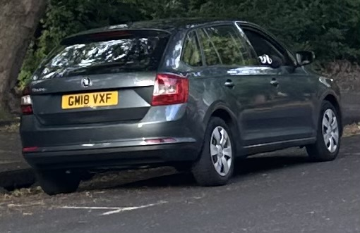

when I got home today around 5pm, there was a man parked in an idling dark gray BMW across the street. he looked to be in his 50s, Caucasian, with a heavyset build, close-cropped silver hair, and wearing a black jumper with white stylized text on the right sleeve. he was sitting in the driver's seat with his window rolled down, smoking a cigarette, in the idling car. I'd seen him at least once or twice before, in the same spot, around evening time during the previous weeks.
I went inside. when I next exited the building around 7pm for the laundry building, he was still there, idling in his car. I could actually see him if I looked out of the top right corner of my window. he gives bad vibes. spooked, I took my big scissors with me when I went out around 7:50pm to transfer my clothes from washer to dryer (pepper spray is illegal in the UK). he was still there, idling. when I walked back out of the laundry building, approaching his car but on the opposite side of the street, he finally drove off, throwing his cigarette out the window as he did so. I went inside.
I don't know why he's been loitering here. but my gut tells me he has bad intentions. and the fact that I can't carry pepper spray makes me feel so vulnerable. big scissors as an alternative honestly scares me a bit because that's a weapon that could be turned on me with fatal results. I would report this to the police, but I doubt they could help since the man probably wasn't breaking any laws they'd care to enforce.

I did get a picture of the car though. his license plate is GM18 VXF. my eyes will remain peeled. I might start taking my big scissors to work in my backpack... I hate feeling unsafe. it really, really sucks to be a woman sometimes.